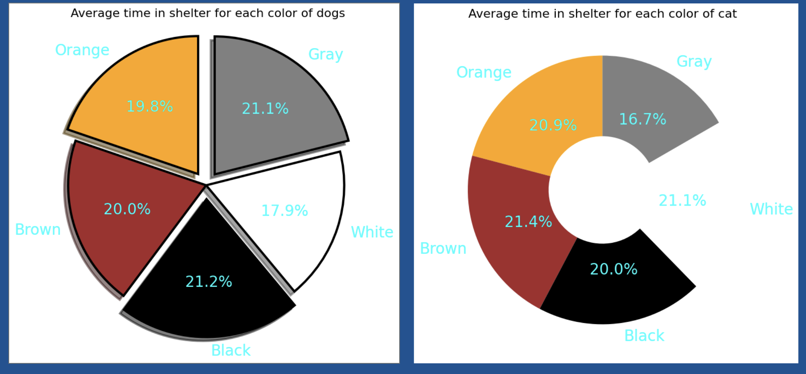

Research Questions
Which factors have the greatest influence on pets adoption?
What is the average time each animal spends in the shelter?
How does color of the animal affect its chance of getting adopted based on species?

Color and Adoption Rates
